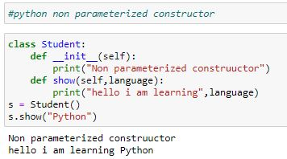

- 1.Introduction
- 2. Variables
- 3.Data types
- 4.Operators
- 5.Conditional_stmts
- 6.I/O_Operations
- 7.Iterative_stmts
- 8.Functions
- 8.1.Arguments
- 9.Sequences
- 10.Modules
- 11.Oops_Introduction
- 11.1.Methods
- 11.2.Inheritance
- 11.3.Polymorphism
- 11.5.Encapsulation
- 12.lambdas
- 13.Exception_Handling
- 14.File_Handling
- 15.Multi_Threading
- 16.Iterators_generators
- 17.Database_Management
Instance Variables and Instance Methods
Instance Variable: If every object contains their own copy of a variable, then the variable is called as an instance variable.
Instance Method: If a method is acting upon an object(instance) then the method is called as an instance method.
An instance method can contain any number of parameters, but the first parameter must be specified as self which represents the current(object) instance of a class.
Syntax of an Instance Method:
def method_name(self, parameters):
statement1
statement2
...
An Instance Variable can be declared in 3 locations and they are:
1) Inside the constructor by using self(object).
2) Inside an instance method by using self(object).
3) Outside the class by using reference(object).
Note: We are recommended to declare an instance variable inside the constructor.
Syntax of an instance variable inside a constructor:
def __init__(self):
self.variable1 = value1
self.variable2 = value2
...
An instance variable declared inside the constructor will be stored into the object during the object creation time.
Syntax of an instance variable inside an instance method:
def methodname(self, parameters):
self.variable1 = value1
self.variable2 = value2
...
An instance variable declared inside an instance method will be stored into the object when the instance method is called.
Syntax of an instance variable outside the class:
reference.variable1 = value1
reference.variable2 = value2
…
An instance variable declared outside the class will be stored into the object when the statement is executed.
Accessing the instance variable outside the class:
An instance variable can be accessed outside the class by using the reference variable.
Syntax:
reference.instancevariable
Accessing the instance variable inside an instance method:
An instance variable can be accessed inside the instance method by using self.
Syntax:
def methodname(self, parameters):
self.instancevariable
Methods
A method can be used for performing some task. The name of a method can be any valid python identifier. A method will execute only when we call it. A method will execute one time, for every call.
Inside Python class 3 types of methods are allowed
1. Instance Methods
2. Class Methods
3. Static Methods
Instance Methods:
Inside method implementation if we are using instance variables then such type of methods are called instance methods.
Inside instance method declaration, we have to pass self variable.
def m1(self)
By using self variable inside method we can able to access instance variables.
Within the class we can call instance method by using self variable and from outside of the class we can call by using object reference.
Setter and Getter Methods:
We can set and get the values of instance variables by using getter and setter methods.
Setter Method:
setter methods can be used to set values to the instance variables. setter methods also known as mutator methods.
syntax:
def setVariable(self,variable):
self.variable=variable
Getter Method:
Getter methods can be used to getvalues of the instance variables.
Getter methods also known as accessor methods.
syntax:
def getVariable(self):
return self.variable
Class Methods:
Inside method implementation if we are using only class variables (static variables), then such type of methods we should declare as class method.
We can declare class method explicitly by using @classmethod decorator.
For class method we should provide cls variable at the time of declaration
We can call class method by using class name or object reference variable
Static Methods:
In general these methods are general utility methods. Inside these methods we won't use any instance or class variables. Here we won't provide self or cls arguments at the time of declaration.
We can declare static method explicitly by using @staticmethod decorator. We can access static methods by using class name or object reference
Class Variable:
If a variable is common to all the objects in a class, then the variable is called as a class variable.
If we do not want to allocate memory for a variable multiple times, then we take the help of class variable. The memory for the class variable will be allocated only time for the entire class i.e it is common to all the objects.
A Class Variable can be declared in 6 locations and they are:
1) Inside the class outside the methods and constructors.
2) Inside a constructor by using classname
3) Inside an instance method by using classname.
4) Inside a class method either by using classname or cls.
5) Inside a static method by using classname.
6) Outside the class by using classname.
Syntax of a class variable inside the class outside the methods and constructors:
class ClassName:
variable1 = value1
variable2 = value2
Syntax of a class variable inside a constructor:
def __init__(self, parameters):
ClassName.variable1 = value1
ClassName.variable2 = value2
Syntax of a class variable inside an instance method:
def methodname(self, parameters):
ClassName.variable1 = value1
ClassName.variable2 = value2
Syntax of a class variable inside a class method:
@classmethod
def methodname(cls, parameters):
cls.variable1 = value1
ClassName.variable2 = value2
Syntax of a class variable inside a static method:
@staticmethod
def methodname():
ClassName.variable1 = value1
ClassName.variable2 = value2
Syntax of a class variable outside the class:
ClassName.variable1 = value1
ClassName.variable2 = value
Python Constructor
A constructor is a special type of method (function) which is used to initialize the instance members of the class.
Constructors can be of two types.
1. Parameterized Constructor
2.Non-parameterized Constructor

Constructor with default and keyword arguments:
Combination of method and a constructor:

A class can contain instance variable, instance method, class variable, class method and static method.
Instance Variable:
An instance variable can be accessed only by using the object(either reference or self).
• An instance variable can be accessed outside the class by using reference(object).
• An instance variable can be accessed inside the constructor and inside the instance method by using self(object).
• An instance variable cannot be accessed inside the class method and inside the static method.
Instance Method: An instance method can be accessed only by using the object(either reference or self).
• An instance method can be accessed outside the class by using reference(object).
• An instance method can be accessed inside the constructor and inside the instance method by using self(object).
• An instance method cannot be accessed inside the class method and inside the static method.
Class Variable: A class variable can be accessed either by using the classname(cls) or by using an object(either reference or self).
• A class variable can be accessed outside the class by using either the classname or by using an object(reference).
• A class variable can be accessed inside the constructor and inside the instance method either by using the classname or by using an object(self).
• A class variable can be accessed inside the class method either by using the classname or by using cls.
• A class variable can be accessed inside the static method by using the classname.
Class Method: A class method can be accessed either by using the classname(cls) or by using an object(either reference or self).
• A class method can be accessed outside the class either by using the classname or by using an object(reference).
• A class method can be accessed inside the constructor and inside the instance method by using either the classname or by using an object(self).
• A class method can be accessed inside the class method either by using the classname or by using cls.
• A class method can be accessed inside the static method by using the classname.
Static Method: A static method can be accessed either by using the classname(cls) or by using an object(either reference or self).
• A static method can be accessed outside the class either by using the classname or by using an object(reference).
• A static method can be accessed inside the constructor and inside the instance method either by using the classname or by using an object(self).
• A static method can be accessed inside the class method either by using the classname or by using cls.
• A static method can be accessed inside the static method by using the classname.
Local Variable: If a variable is declared inside a constructor or inside a method or inside a function, then the variable is called as local variable.
Global Variable: If a variable is declared outside a class and outside a function, then the variable is called as global variable.
The global variables can be accessed any where but the local variables can be accesed only in that method or function where they are declared.
The global variables can be accessed inside a function, but they cannot be modified because they will be considered as a local variable. In order to modify the global variable inside the function, then we must use global keyword for that variable in that function.